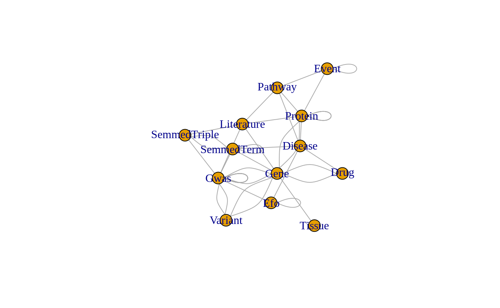

Meta functionalities of the EpiGraphDB platform
meta-functionalities.RmdThis RMarkdown document demonstrates how key elements from the github notebook for the meta functionalities can be achieved using the R package. For detailed explanations of the case study please refer to the notebook on github.
Here we show the following aspects of the EpiGraphDB platform, and how to use the API to get the information:
- Metadata: meta nodes and meta edges, and the overall schema.
- Search for a specific node under the meta node.
- Cypher: how to query the database directly using Neo4j Cypher
For detailed documentation on the API endpoints please visit:
- The Swagger interface: http://api.epigraphdb.org
- The sections regarding API endpoints on the documentation site: http://docs.epigraphdb.org/api/api-endpoints/
library("magrittr") library("dplyr") #> #> Attaching package: 'dplyr' #> The following objects are masked from 'package:stats': #> #> filter, lag #> The following objects are masked from 'package:base': #> #> intersect, setdiff, setequal, union library("purrr") #> #> Attaching package: 'purrr' #> The following object is masked from 'package:magrittr': #> #> set_names library("igraph") #> #> Attaching package: 'igraph' #> The following objects are masked from 'package:purrr': #> #> compose, simplify #> The following objects are masked from 'package:dplyr': #> #> as_data_frame, groups, union #> The following objects are masked from 'package:stats': #> #> decompose, spectrum #> The following object is masked from 'package:base': #> #> union library("epigraphdb") #> EpiGraphDB v0.3 #> #> Web API: http://api.epigraphdb.org #> #> To turn off this message, use #> suppressPackageStartupMessages({library("epigraphdb")})
Metadata
Here we query for the metadata information using the endpoint GET /meta/schema, which will be used for downstream processing.
endpoint <- "/meta/schema" params <- list( graphviz = FALSE, plot = FALSE ) metadata <- query_epigraphdb( route = endpoint, params = params, mode = "raw" ) metadata %>% str(2) #> List of 3 #> $ nodes :List of 13 #> ..$ Disease :List of 2 #> ..$ SemmedTerm :List of 2 #> ..$ Pathway :List of 2 #> ..$ Gene :List of 2 #> ..$ Literature :List of 2 #> ..$ Protein :List of 2 #> ..$ Variant :List of 2 #> ..$ SemmedTriple:List of 2 #> ..$ Efo :List of 2 #> ..$ Tissue :List of 2 #> ..$ Gwas :List of 2 #> ..$ Drug :List of 2 #> ..$ Event :List of 2 #> $ edges :List of 42 #> ..$ OPENTARGETS_DRUG_TO_DISEASE :List of 2 #> ..$ PROTEIN_TO_LITERATURE :List of 2 #> ..$ GWAS_NLP_EFO :List of 2 #> ..$ EVENT_IN_PATHWAY :List of 2 #> ..$ BN_GEN_COR :List of 2 #> ..$ INTACT_NOT_INTERACTS_WITH :List of 2 #> ..$ STRING_INTERACT_WITH :List of 2 #> ..$ PRS :List of 2 #> ..$ INTACT_INTERACTS_WITH_PROTEIN_PROTEIN:List of 2 #> ..$ INTACT_INTERACTS_WITH_GENE_PROTEIN :List of 2 #> ..$ TOPHITS :List of 2 #> ..$ SEM_OBJ :List of 2 #> ..$ PROTEIN_TO_DISEASE :List of 2 #> ..$ MONDO_MAP_UMLS :List of 2 #> ..$ MR :List of 2 #> ..$ PROTEIN_IN_EVENT :List of 2 #> ..$ VARIANT_TO_GENE :List of 2 #> ..$ PATHWAY_TO_DISEASE :List of 2 #> ..$ SEM_PREDICATE :List of 2 #> ..$ EXPRESSED_IN :List of 2 #> ..$ EFO_CHILD_OF :List of 2 #> ..$ INTACT_INTERACTS_WITH_GENE_GENE :List of 2 #> ..$ GWAS_SEM :List of 2 #> ..$ PRECEDING_EVENT :List of 2 #> ..$ SEM_GENE :List of 2 #> ..$ METAMAP_LITE :List of 2 #> ..$ SEM_SUB :List of 2 #> ..$ GENE_TO_LITERATURE :List of 2 #> ..$ PROTEIN_IN_PATHWAY :List of 2 #> ..$ MONDO_MAP_EFO :List of 2 #> ..$ CPIC :List of 2 #> ..$ XQTL_MULTI_SNP_MR :List of 2 #> ..$ GWAS_TO_LIT :List of 2 #> ..$ PATHWAY_TO_LITERATURE :List of 2 #> ..$ XQTL_SINGLE_SNP_MR_SNP_GENE :List of 2 #> ..$ OBS_COR :List of 2 #> ..$ GWAS_NLP :List of 2 #> ..$ XQTL_SINGLE_SNP_MR_GENE_GWAS :List of 2 #> ..$ OPENTARGETS_DRUG_TO_TARGET :List of 2 #> ..$ GWAS_TO_VARIANT :List of 2 #> ..$ GENE_TO_PROTEIN :List of 2 #> ..$ SEM_TO_LIT :List of 2 #> $ connections:List of 41 #> ..$ :List of 4 #> ..$ :List of 4 #> ..$ :List of 4 #> ..$ :List of 4 #> ..$ :List of 4 #> ..$ :List of 4 #> ..$ :List of 4 #> ..$ :List of 4 #> ..$ :List of 4 #> ..$ :List of 4 #> ..$ :List of 4 #> ..$ :List of 4 #> ..$ :List of 4 #> ..$ :List of 4 #> ..$ :List of 4 #> ..$ :List of 4 #> ..$ :List of 4 #> ..$ :List of 4 #> ..$ :List of 4 #> ..$ :List of 4 #> ..$ :List of 4 #> ..$ :List of 4 #> ..$ :List of 4 #> ..$ :List of 4 #> ..$ :List of 4 #> ..$ :List of 4 #> ..$ :List of 4 #> ..$ :List of 4 #> ..$ :List of 4 #> ..$ :List of 4 #> ..$ :List of 4 #> ..$ :List of 4 #> ..$ :List of 4 #> ..$ :List of 4 #> ..$ :List of 4 #> ..$ :List of 4 #> ..$ :List of 4 #> ..$ :List of 4 #> ..$ :List of 4 #> ..$ :List of 4 #> ..$ :List of 4
Meta nodes
We can extract the specific meta node information as a pandas dataframe from the metadata.
meta_node_df <- metadata %>% pluck("nodes") %>% { names <- names(.) transpose(.) %>% as_tibble() %>% mutate(meta_node = names) %>% # Hide properties column which does not display well select(meta_node, count) %>% # We also need to flatten count mutate(count = flatten_int(count)) } meta_node_df %>% arrange(meta_node) %>% mutate(count = format(count, big.mark = ",")) #> # A tibble: 13 x 2 #> meta_node count #> <chr> <chr> #> 1 Disease " 21,829" #> 2 Drug " 2,455" #> 3 Efo " 25,390" #> 4 Event " 11,868" #> 5 Gene " 59,171" #> 6 Gwas " 31,773" #> 7 Literature "29,137,785" #> 8 Pathway " 2,180" #> 9 Protein " 21,543" #> 10 SemmedTerm " 103,967" #> 11 SemmedTriple " 3,428,531" #> 12 Tissue " 53" #> 13 Variant " 88,176"
Meta relationships and connections
We can also extract the meta relationship (edge) information, and the connections.
meta_rel_df <- metadata %>% pluck("edges") %>% { names <- names(.) transpose(.) %>% as_tibble() %>% mutate(meta_rel = names) %>% mutate(count = flatten_int(count)) %>% select(meta_rel, count) } %>% inner_join( metadata %>% pluck("connections") %>% { transpose(.) %>% as_tibble() %>% mutate(meta_rel = flatten_chr(rel)) %>% mutate_at(vars(from_node, to_node), flatten_chr) %>% select(meta_rel, from_node, to_node) } ) #> Joining, by = "meta_rel" meta_rel_df %>% arrange(from_node, to_node) %>% mutate(count = format(count, big.mark = ",")) #> # A tibble: 41 x 4 #> meta_rel count from_node to_node #> <chr> <chr> <chr> <chr> #> 1 MONDO_MAP_EFO " 2,822" Disease Efo #> 2 MONDO_MAP_UMLS " 3,414" Disease SemmedTerm #> 3 OPENTARGETS_DRUG_TO_DISEASE " 2,486" Drug Disease #> 4 CPIC " 355" Drug Gene #> 5 OPENTARGETS_DRUG_TO_TARGET " 6,024" Drug Gene #> 6 EFO_CHILD_OF " 43,154" Efo Efo #> 7 PRECEDING_EVENT " 10,418" Event Event #> 8 XQTL_MULTI_SNP_MR " 3,098,049" Gene Gwas #> 9 XQTL_SINGLE_SNP_MR_GENE_GWAS " 8,703,863" Gene Gwas #> 10 GENE_TO_LITERATURE " 771" Gene Literature #> # … with 31 more rows
Schema plot
graph <- meta_rel_df %>% select(from_node, to_node) %>% igraph::graph_from_data_frame(directed = FALSE) graph$layout <- igraph::layout_with_kk plot(graph)

A detailed version of the shema plot can be obtained from the API:
schema_plot
Search for specific node
Users can use the explorer on the Web UI to search for a specific node by:
- fuzzy matching by “name” field.
- exact matching by “ID” field if you know the its ID (e.g. the ID to a GWAS from IEU GWAS Database).
Here we show how these are done at the API level using Gwas nodes as an example.
First we need to know what the “ID” and “name” fields are for the meta nodes using GET /meta/nodes/id-name-schema:
endpoint <- "/meta/nodes/id-name-schema" meta_node_fields <- query_epigraphdb( route = endpoint, params = NULL, mode = "raw" ) meta_node_fields #> $Disease #> $Disease$id #> [1] "id" #> #> $Disease$name #> [1] "label" #> #> #> $Drug #> $Drug$id #> [1] "label" #> #> $Drug$name #> [1] "label" #> #> #> $Efo #> $Efo$id #> [1] "id" #> #> $Efo$name #> [1] "value" #> #> #> $Event #> $Event$id #> [1] "reactome_id" #> #> $Event$name #> [1] "name" #> #> #> $Gene #> $Gene$id #> [1] "ensembl_id" #> #> $Gene$name #> [1] "name" #> #> #> $Tissue #> $Tissue$id #> [1] "tissue" #> #> $Tissue$name #> [1] "tissue" #> #> #> $Gwas #> $Gwas$id #> [1] "id" #> #> $Gwas$name #> [1] "trait" #> #> #> $Literature #> $Literature$id #> [1] "pubmed_id" #> #> $Literature$name #> [1] "pubmed_id" #> #> #> $Pathway #> $Pathway$id #> [1] "reactome_id" #> #> $Pathway$name #> [1] "name" #> #> #> $Protein #> $Protein$id #> [1] "uniprot_id" #> #> $Protein$name #> [1] "uniprot_id" #> #> #> $SemmedTerm #> $SemmedTerm$id #> [1] "id" #> #> $SemmedTerm$name #> [1] "name" #> #> #> $Variant #> $Variant$id #> [1] "name" #> #> $Variant$name #> [1] "name"
Fuzzy matching
Here we search for nodes can contain “body mass index” in their traits.
name <- "body mass index" endpoint <- "/meta/nodes/Gwas/search" params <- list(name = name) results <- query_epigraphdb( route = endpoint, params = params, mode = "table" ) results #> # A tibble: 10 x 18 #> node.note node.access node.year node.mr node.author node.consortium node.sex #> <chr> <chr> <chr> <chr> <chr> <chr> <chr> #> 1 NA public 2018 1 Hoffmann TJ NA NA #> 2 <NA> public 2015 1 Locke AE NA Males a… #> 3 <NA> public 2015 1 Locke AE NA Males #> 4 <NA> public 2015 1 Locke AE NA Males a… #> 5 NA public 2017 1 Akiyama M NA NA #> 6 Dominanc… public 2016 0 Wood NA Males a… #> 7 <NA> public 2015 1 Locke AE NA Females #> 8 <NA> public 2013 1 Randall JC NA Females #> 9 <NA> public 2013 1 Randall JC NA Males #> 10 21001: O… public 2018 1 Ben Elswor… MRC-IEU Males a… #> # … with 11 more variables: node.priority <chr>, node.pmid <chr>, #> # node.population <chr>, node.unit <chr>, node.sample_size <chr>, #> # node.nsnp <chr>, node.trait <chr>, node.id <chr>, node.subcategory <chr>, #> # node.category <chr>, node.sd <chr>
Exact matching
Similarly, we can exact match a specific node by its ID.
id <- "ieu-a-2" endpoint <- "/meta/nodes/Gwas/search" params <- list(id = id) results <- query_epigraphdb( route = endpoint, params = params, mode = "table" ) results #> # A tibble: 1 x 17 #> node.access node.year node.mr node.author node.consortium node.sex #> <chr> <chr> <chr> <chr> <lgl> <chr> #> 1 public 2015 1 Locke AE NA Males a… #> # … with 11 more variables: node.priority <chr>, node.pmid <chr>, #> # node.population <chr>, node.sd <chr>, node.unit <lgl>, #> # node.sample_size <chr>, node.nsnp <chr>, node.trait <chr>, node.id <chr>, #> # node.subcategory <chr>, node.category <chr>
Cypher (advanced)
Advanced users that are familiar with Neo4j Cypher can query the database using Cypher directly.
query <- " MATCH (exposure:Gwas)-[mr:MR]->(outcome:Gwas) WHERE exposure.trait = 'Body mass index' RETURN exposure, outcome, mr LIMIT 2 " endpoint <- "/cypher" params <- list(query = query) # NOTE this is a POST request results <- query_epigraphdb( route = endpoint, params = params, method = "POST", mode = "table" ) results #> # A tibble: 2 x 45 #> exposure.access exposure.year exposure.mr exposure.author exposure.consor… #> <chr> <chr> <chr> <chr> <lgl> #> 1 public 2015 1 Locke AE NA #> 2 public 2015 1 Locke AE NA #> # … with 40 more variables: exposure.sex <chr>, exposure.priority <chr>, #> # exposure.pmid <chr>, exposure.population <chr>, exposure.sd <chr>, #> # exposure.unit <lgl>, exposure.sample_size <chr>, exposure.nsnp <chr>, #> # exposure.trait <chr>, exposure.id <chr>, exposure.subcategory <chr>, #> # exposure.category <chr>, outcome.note <lgl>, outcome.ncase <chr>, #> # outcome.access <chr>, outcome.year <chr>, outcome.mr <chr>, #> # outcome.author <chr>, outcome.consortium <chr>, outcome.sex <chr>, #> # outcome.priority <chr>, outcome.population <chr>, outcome.unit <chr>, #> # outcome.sample_size <chr>, outcome.nsnp <chr>, outcome.ncontrol <chr>, #> # outcome.trait <chr>, outcome.id <chr>, outcome.subcategory <lgl>, #> # outcome.category <lgl>, mr.b <dbl>, mr.se <dbl>, mr.method <chr>, #> # mr.nsnp <int>, mr.selection <chr>, mr.pval <dbl>, mr.ci_upp <dbl>, #> # mr.log10pval <dbl>, mr.ci_low <dbl>, mr.moescore <dbl>
sessionInfo
sessionInfo() #> R version 4.0.0 (2020-04-24) #> Platform: x86_64-pc-linux-gnu (64-bit) #> Running under: Ubuntu 16.04.6 LTS #> #> Matrix products: default #> BLAS: /home/travis/R-bin/lib/R/lib/libRblas.so #> LAPACK: /home/travis/R-bin/lib/R/lib/libRlapack.so #> #> locale: #> [1] LC_CTYPE=en_US.UTF-8 LC_NUMERIC=C #> [3] LC_TIME=en_US.UTF-8 LC_COLLATE=en_US.UTF-8 #> [5] LC_MONETARY=en_US.UTF-8 LC_MESSAGES=en_US.UTF-8 #> [7] LC_PAPER=en_US.UTF-8 LC_NAME=C #> [9] LC_ADDRESS=C LC_TELEPHONE=C #> [11] LC_MEASUREMENT=en_US.UTF-8 LC_IDENTIFICATION=C #> #> attached base packages: #> [1] stats graphics grDevices utils datasets methods base #> #> other attached packages: #> [1] epigraphdb_0.2 igraph_1.2.5 purrr_0.3.4 dplyr_1.0.0 magrittr_1.5 #> #> loaded via a namespace (and not attached): #> [1] Rcpp_1.0.4.6 knitr_1.28 MASS_7.3-51.5 tidyselect_1.1.0 #> [5] R6_2.4.1 rlang_0.4.6 fansi_0.4.1 httr_1.4.1 #> [9] stringr_1.4.0 tools_4.0.0 xfun_0.14 utf8_1.1.4 #> [13] cli_2.0.2 ellipsis_0.3.1 htmltools_0.4.0 yaml_2.2.1 #> [17] assertthat_0.2.1 digest_0.6.25 rprojroot_1.3-2 tibble_3.0.1 #> [21] lifecycle_0.2.0 pkgdown_1.5.1.9000 crayon_1.3.4 vctrs_0.3.0 #> [25] fs_1.4.1 curl_4.3 memoise_1.1.0 glue_1.4.1 #> [29] evaluate_0.14 rmarkdown_2.2 stringi_1.4.6 pillar_1.4.4 #> [33] compiler_4.0.0 desc_1.2.0 generics_0.0.2 backports_1.1.7 #> [37] jsonlite_1.6.1 pkgconfig_2.0.3